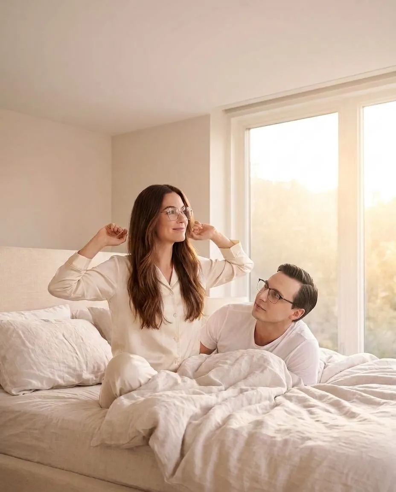
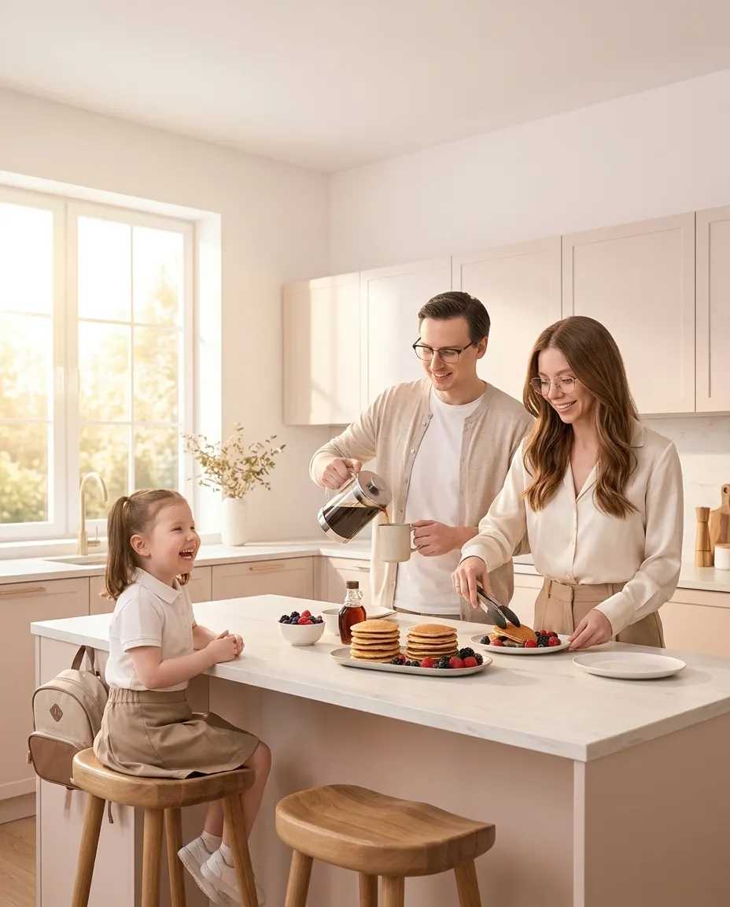
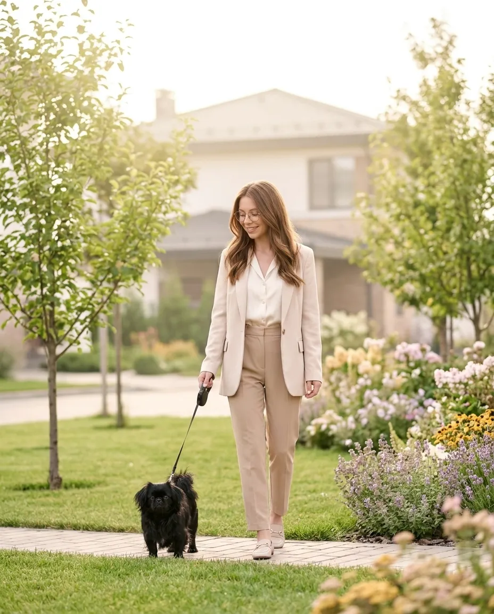
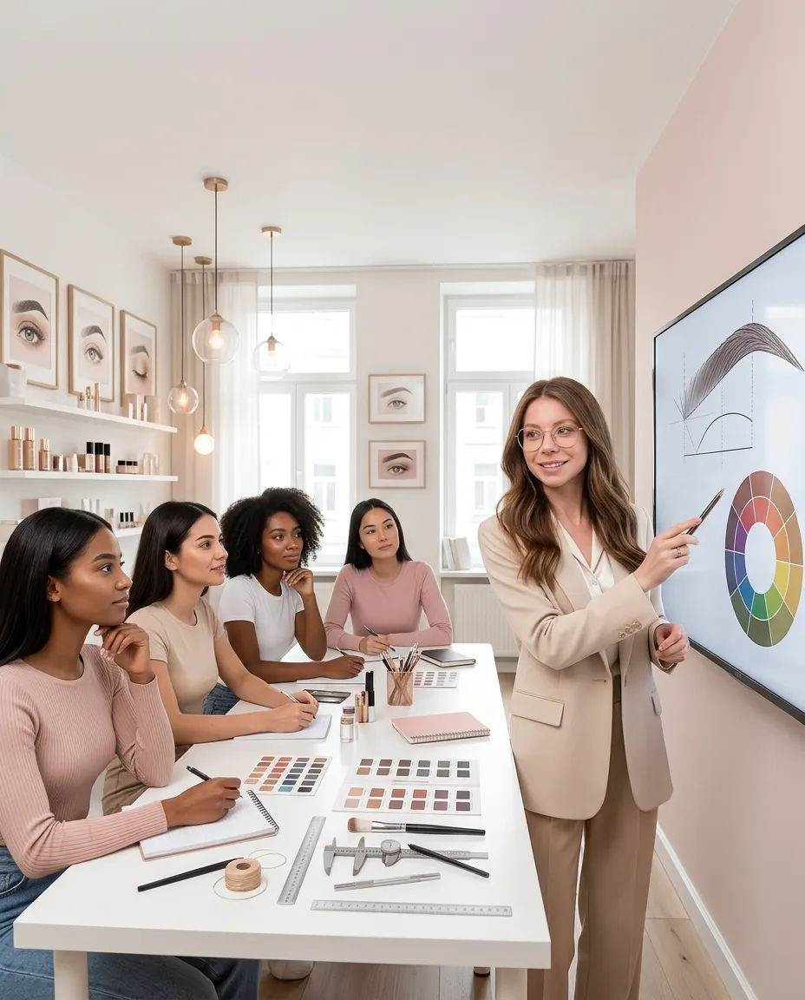
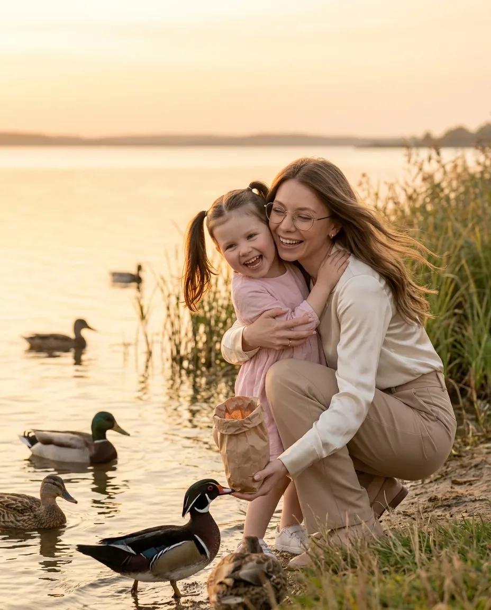
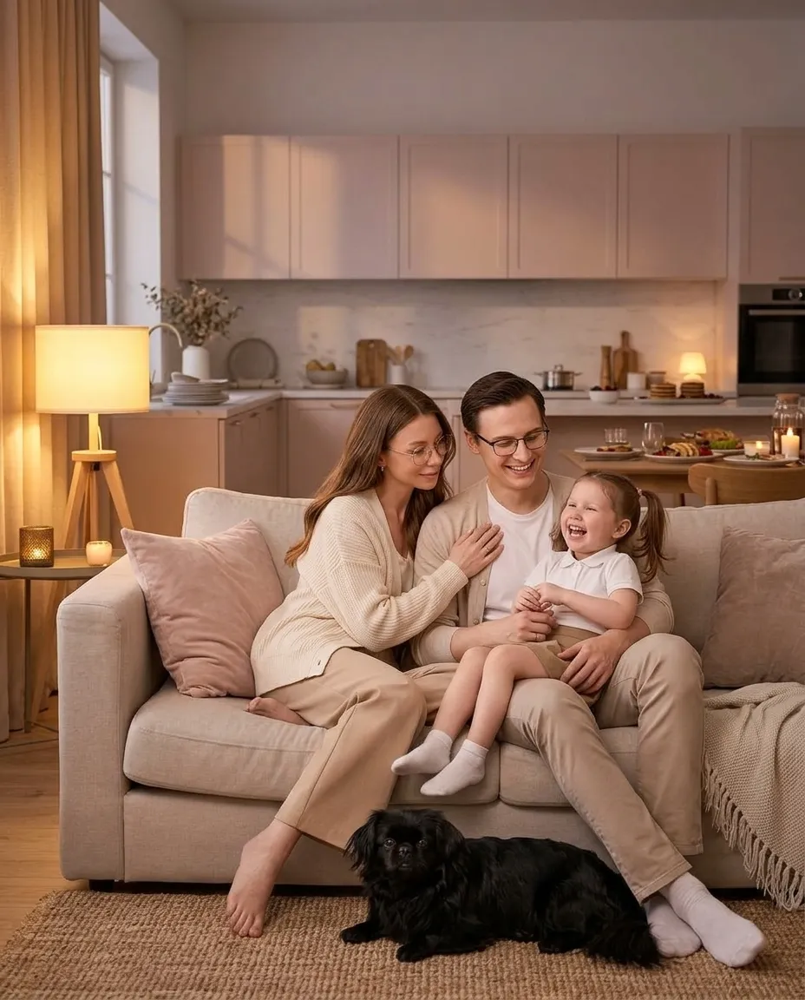

07:00. Прокидаюся у своєму домі
Простора світла спальня нашого власного будинку, великі вікна й ранкове сонце. Поруч чоловік, у сусідній кімнаті спить наша донька. Ми створили саме той дім, про який мріяли.
Я живу життям, яке колись було моєю мрією.
Ось один мій день у 2031 році. Гортайте вниз, щоб прожити його разом зі мною.

Простора світла спальня нашого власного будинку, великі вікна й ранкове сонце. Поруч чоловік, у сусідній кімнаті спить наша донька. Ми створили саме той дім, про який мріяли.
Повільна б'юті-рутина: догляд за обличчям, укладка, легкий макіяж. Почуваюся здоровою, жіночною та впевненою. Я навчилася не відкладати турботу про себе на потім.

Разом із чоловіком готуємо сніданок, п'ємо каву, збираємо доньку в садочок. Ми не поспішаємо в хаосі, а насолоджуємося ранком. У нас є час одне для одного.

Зелений двір, свіже повітря, спокій. Я починаю день без постійного поспіху та телефонних дзвінків.
Сідаю за кермо свого білого позашляховика й їду у власний beauty-простір у Тернополі. Невеликий, але дуже стильний салон, де все створено за моїм смаком і баченням.

Теоретичний день навчання з брів: колористика, температури відтінків, архітектура, робота з різними типами зовнішності. Я бачу прогрес учениць і пишаюся, що допомагаю іншим майстрам розвиватися та заробляти більше.
Смачно обідаємо, п'ємо каву, ділимося новинами, планами й подорожами. У нас є час на дружбу й відпочинок, а не лише на роботу та побут.
Приймаю постійну клієнтку, з якою працюю вже багато років. Потім співбесіда з новим майстром макіяжу: я обираю людей не лише за навичками, а й за цінностями.
Масаж. Це мій запланований час для відновлення, а не те, що я роблю, коли вже немає сил. Я регулярно займаюся спортом, стежу за здоров'ям і маю достатньо часу на себе.

Забираю доньку із садочка, і дорогою додому ми заїжджаємо до озера: гуляємо, годуємо качечок, фотографуємося. Я не хочу пропустити її дитинство через постійну зайнятість.
Заходжу у свою онлайн-спільноту для beauty-майстрів: переглядаю роботи учениць, записую відеорозбори. Мій онлайн-продукт приносить стабільний дохід і допомагає дівчатам з різних міст і країн.

Увечері гуляємо всією сім'єю, разом готуємо вечерю, граємося з донькою, говоримо з чоловіком. Після вечірніх справ у мене є час на себе, затишок і спокій.
Лягаю спати поруч із коханою людиною, знаючи, що ми здорові, щасливі та маємо одне одного.
А ким ти бачиш себе через 5 років?
Торкнися нічного неба й загадай бажання.